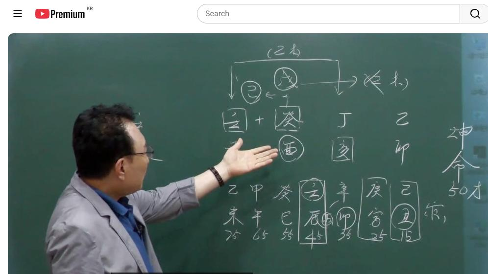

남촌물상TV 전체 문서 › 동영상 V0075
사주의 신비를 풀다, 여자 무관 사주가 살아가는 운명, 남촌물상론

| 문서 번호 | V0075 (동영상) |
|---|---|
| 영상 URL | https://www.youtube.com/watch?v=3kl7sZiousM |
| 영상 ID | 3kl7sZiousM |
| 게시일 | 2024-06-03 |
| 길이 | 34:11 (2051초) |
| 조회수 | 1,622회 (수집 시점 기준) |
| 카테고리 | Howto & Style |
| 자막 | ko (자동생성) |
| 수집 시각 | 2026-08-30 17:03 (KST) |
영상 설명 (YouTube 설명 원문 그대로)
사주의 신비를 풀다, 여자 무관 사주가 살아가는 운명, 남촌물상론 #사주 #무관사주 #계수일간 #사주풀이
전체 자막 (716구간 · 타임스탬프 클릭 시 해당 장면으로 이동)
[0:00]경진이 경진이가 지욱 부부궁이 합이
[0:03]됐다 이럴 때가 결혼시기가 좋다
[0:07]이렇게 여러분들이 해 주셔야 된다 그
[0:12]말입니다 구독 좋아요 구독 좋아
[0:15]밴드에 올린 사주로 한번 풀어볼
[0:17]건데요 제가 그 유인물의 제목이
[0:19]타이틀 뭐라고 써줬어요 금사 사요 자
[0:23]금사빠 무관 사주를 금사라 그래요
[0:26]무관 사주를 자 무관 사주가 금사빠인
[0:29]이사주 를 여자 50세 사주인데 을묘
[0:33]정해 개유 임자다 그 말이에요
[0:36]묘 근데 이제 중요한 것은 이렇게
[0:39]물들이 많잖아요 본인도 물이고 이제
[0:43]본인 계수 일간인 지지도 여물도
[0:48]있고요 근데 이제 보통 생각할 때
[0:50]우리가 포괄적으로 생각할 때는
[0:53]포괄적으로 생각할 때는 뭐라 할까요
[0:55]강물 크게 봤을 때 강물로 보는데
[0:59]해석하 때 여러분들이 구별의 해석을
[1:01]하셔야 된다 그 말이에요 그 보통
[1:03]보면 아 물인데요 이렇게 생각하시면
[1:05]안 돼요 자 이렇게 합에 있을 때
[1:08]전체적으로 봤을
[1:10]때는 강물이다 큰 물이다 이렇게
[1:13]봅니다 그러나 개인 개인 개개인
[1:16]이거는 자식 자리고 이거 내 자리
[1:19]있듯이 따로따로 계산하는 건 해야
[1:21]된다 그 말이에요 자 그러면이 사주가
[1:24]아 금사파 사주니까 뭐가 없어요 자
[1:27]토가 없다 자 토가 없다 자 토가
[1:31]없기 때문에 무관 사주죠 무관
[1:34]사주다
[1:37]무관 우리 이제 어떻게 보면은
[1:40]무관사주 특성들이 참 여러 가지가
[1:43]있죠 그 관이 없다는 얘기는 우리를
[1:46]이제 보면 그 질서 순서를 안 지킨다
[1:49]이렇게 얘기를 하는데 제 이런
[1:51]사람들도 마찬가지로 여자
[1:53]똑같습니다 금방 남자의 손길이 다하면
[1:57]좋고 또 금방 실증을 느낀 거예요
[2:00]그래서이 사람들 항시 금사빠의 특징은
[2:04]어 관이 올 때는 남자하고 전속을
[2:07]하고 관이 끝나면은 거의 관계성이
[2:10]좋지 않다이 개념을 항시 머리에
[2:13]가지고 있어야 된다 그 말이에요 자
[2:16]그러니깐 지금 그
[2:20]관운이이 초에 우리가 초에 지금 보면
[2:23]24 살까지가 관운이 올 수 있었어요
[2:25]기추 군까지 왔단 말이야 관이
[2:28]초년부터 그러면 자 만약에이 사람이
[2:32]2살 이전에 결혼했다 그럴 때 어떤
[2:35]현상이 오느냐 이럴 때는 다음 운이
[2:40]그 관이 벗어지고
[2:42]되면은
[2:44]다시 결혼 생활이 힘들다 이게 전제
[2:46]조건이에요
[2:48]이게 이제 우리들이 지금 그 알고
[2:51]있는 내역이 바로 여기까지라 철두철미
[2:53]아셔야 돼요 자 그러면 결혼이 지나서
[2:57]하면 될 거 아니야 이렇게 할 거
[2:58]아니에요 결혼이 지나면 될 거 아니야
[3:01]그럼 지나서 결혼이 잘 안 돼요 뭔
[3:04]얘기냐면이 관운이 올 때 결혼이 잘
[3:07]되는데 관운이 지나면 결혼이 잘 안
[3:09]돼 그러니까 이제 우리가 날짜를
[3:12]찾아서 연도를 찾아서 결혼 선택을 해
[3:15]드리는데 여기이 어느 때 결혼하면
[3:18]좋냐 그 한번 계산을 해 보는 거죠
[3:21]근데 보시면이 24살 이전에 보면이
[3:25]딱 괜찮단 말이에요 이게 자 보시면
[3:30]이 사주 자체가 본인이 관을 끌어온
[3:49]사주예담 얘기는 여자가 그렇게 나쁘게
[3:53]생기지 않했다 결과적으로 본인이
[3:56]착실하고 했다라고 느끼는 거예요 근데
[3:58]이제 이게 특징이 특이 자여 을목이
[4:02]하나씩 있어요 그러면 자 나의 관해
[4:05]관이 을목이 을목이 있고 정립 합이
[4:08]돼 있단 말이야 이렇게 자 정립 합이
[4:10]이렇게 돼 있어요 정립 합이 돼
[4:13]있으니까 여기가 을목이 생겼다 그
[4:15]말입니다 그렇죠 자 그러니까
[4:19]우리들이이 물론을 제대로 하지 않는
[4:22]사람들은 무게 파해 끝나잖아요
[4:25]그러니까 기 본인이 정님 한 목이
[4:27]을목이 됐다 그 말이에요 그러면 잘
[4:30]보세요 내가
[4:33]선택한이
[4:35]관에서 두 개 을목이 살아가고 있다고
[4:38]생각하시면
[4:39]되죠이 생각을 하셔야 돼요 자
[4:43]그러면이 내가 만든 밭에 밭에 두
[4:47]개의 을목이 결과고 살고 있다 그러
[4:52]이제 우리가 봤을 때 이제 이런
[4:53]경우를 보편 배울 때 기초 배울 때
[4:56]어떻게 배웠느냐 기초에서는 어가
[5:00]이쁘게 크데 크면 얽 얽 설켜서
[5:04]문제가 되네 이렇게 다
[5:05]배웠어요 근데 이제 이런 것을 설키고
[5:08]설킨 거 얽히고 얽힌 거예요 그러나
[5:12]그러나이 계수에 합에서 뭐가 됐어요
[5:17]기토
[5:18]땅에 기토 땅에 두 개 을목이 심어진
[5:22]걸로 보시라 그 말입니다 이해하셨죠
[5:25]그러니까 지금 우리가 기초발 배울
[5:29]때는 켜 그래서 경금을 끌어와 이제
[5:31]이것만 생각을 했는데 우리는 창업반
[5:34]아이에요 현업을 하는 사람들이기
[5:37]때문에이 두 개의 나무를 결과적으로이
[5:41]내 관에
[5:42]이용해서 키울 수 있다는 얘기다 그
[5:45]말이에요 그 작은 나무니까 작은 나무
[5:47]실게 있겠죠 그러면 자이 사람이
[5:51]이제에 두 개 나무가 어떤 역할을
[5:54]하느냐예요 우리가 이제 관과 재
[5:57]관법을 쓸 때 어떻게 얘기하느냐 나의
[6:00]관해 나의 관이 토란
[6:03]말이에요이 토에서 뭐 할 거냐예요
[6:06]직업이 하는 일이 항시 있잖아요 가장
[6:09]직업을 쉽게 찾는 방법이에요 우리
[6:11]물만이 가진 장점이고 우리만 가질 수
[6:14]있는 특허권이 쉽게서 자 그러니까
[6:18]본인들이이 내 관 내 직업 내 남자
[6:23]이거 아니에요 그러면
[6:26]자 남자를 내가 해서 토 사람이다 그
[6:31]말이 합니까 그럼 내가 선택한 남자를
[6:34]가지고 본래는 무토 했는데 기토의
[6:37]남자로 만들어 사라이 얘기다 같은
[6:40]얘기로 해석하시면 되죠 이해되 자
[6:42]그러면 이제 항시 우리가 아이
[6:45]관계성이 좋냐 풀어질 때도 있을 거
[6:48]아니에요 그 관 풀어져 본다 그러면
[6:52]이것도 저것도 안 되잖아요 이렇게 제
[6:55]전체적인 원을 생각하실 때 판단과
[6:58]기준이 여러분들이 설정이 돼 있어야
[7:00]한다 그 말이야 그럼 이제에 사주
[7:03]원급을 놓고 해석할 때 이제 어렵다고
[7:05]생각하지 마시고 뭐 하시면 좋을까요
[7:08]그럼 자 관의 관으로 갈 거냐 제재로
[7:10]할 거냐 그럼 여기서 이제 한번
[7:12]계산해 봅시다 여기서 잘 한번 연
[7:15]숙달 하고 나중에 써먹겠지
[7:17]여러분들이 자
[7:20]계수에 자 관은 뭐예요 토죠 토가
[7:24]없어요 자기가 끌어온 부터만 있죠
[7:27]그러면 토에 관은
[7:30]자 을목이 말이야 어허 그럼 간단하게
[7:34]생각해서 네가 할 수 있는 일은 네가
[7:37]할 수 있는 일은이 목의 행위의
[7:40]교육에 대한 강의를 할 것이다 그런데
[7:43]얼른 생각할 때 우리가 고전으로가 자
[7:46]이것을 여기 착각을 하시면 안 돼
[7:49]무게 화가 될 때는 어느 때냐 어느
[7:52]때냐 제로 갈
[7:54]때 재로 갈 때 저 뭘로 가어 우리는
[7:58]관으로 갔잖아요 한번 계시다 자
[8:01]계수의 오늘 똑바로 잘 배고셔야 돼
[8:04]여러분들이 계수의 쟤는 뭐예요 자
[8:07]정화 한 말이 정화 정화와 제는 금
[8:11]자 금이에요
[8:12]자이 이렇게 답이 나왔네 자 그러면
[8:16]이제이
[8:17]사람이 제일 지금 필요한게 뭐예요 토
[8:21]토지 그 관으로
[8:24]가야죠 필요한게 슨 저 내가 제일
[8:27]필요한게 토 아니에요
[8:30]여자니까 남자 내 직업 뭐 이런 거걸
[8:33]여러분들 연상을 하시면 가장 쉽게
[8:35]뭐가 필요하냐 그게 관을 쓸 것이냐
[8:38]재료 쓸 것인가를 선택할 때 기준
[8:41]설정 하실 때 여러분들이이 사주
[8:44]원국에서 뭐를 선택할 것이냐 그
[8:46]말이에요 그게 직업이
[8:48]돼 그러니까이 사람이 돈을 벌게 자
[8:52]보 봐요 제가 우리 천의 천가 합의
[8:55]원리를 여러분들이 진가를 여러
[8:57]느끼셔야 돼 뭔 얘기냐 그러면
[9:00]관의 관법을 쓸 때는 무조건 우리는
[9:02]아까 각기 합의 을하고 상생으로 쓴게
[9:06]아니라 상극의 개념을 쓰고 있다이
[9:08]말이에요 그래서 조이
[9:13]상생지원 한개든 더해서 관의 끝까지도
[9:17]제시할 수 있다 이게 우리 물상의
[9:20]장점이고 제가 개발한 학문이에요
[9:24]신문이다 정확하게 답을 얻었죠
[9:27]확실하죠 이제 왜 왜 관을 쓸 때는
[9:30]어떤 쓸 거냐 우리가 보면 아까
[9:35]고전에서 무게는 화라고 배웠죠
[9:39]그렇잖아요 상생할 때 소위 재로 할
[9:42]때 화를 썼다 그 말이에요 근데
[9:44]우리는 각기 합은 뭐라고 그 있어요
[9:48]기토가 된다
[9:50]그렇잖아요 상국으로 갔다 그 말이야
[9:52]상국으로 우리가 상생과 상극을
[9:55]구별해서 그 우리 기초반에서 천가
[9:57]해볼
[9:58]배웠잖아요 극으로 가는 것은
[10:02]뭐냐 관으로 가는 거고 그 무교 화로
[10:05]가는 것은 재로 갔다 그 말이야 자
[10:07]이런 걸 차지해 보면 이제 답이
[10:09]정확하게
[10:11]아하 우리가 배웠던 학문이이 정도
[10:14]남이 안 배운 것을 진짜 배웠구나
[10:17]하는 것을 실감하게 될 것이다 이게
[10:20]이제 저희들이 제가 이용권 한권
[10:22]중에서 제일 첫째 조건이 물상 하신
[10:26]분들은 이걸 모르시면 절대 물상 안
[10:28]된다 고전하 분들도 알아야 돼요
[10:30]이거는요 알아야 됩니다 왜 상생
[10:34]배웠으니까 음과 양의 관계에서 상극
[10:39]까지를 존재하는 것을 여러분들은
[10:41]배우지 못했었다 그 말이야 이게 이제
[10:43]중 제일 핵심이에요 그러니까 우리는이
[10:47]사람이 제일 사주가 필요한 오행이
[10:50]뭔가를 기점을 잡아서 거기에 관에 갈
[10:54]것이냐 재로 재로 갈 것이야 제 간을
[10:56]쓸 거냐 직업을 관의 간을 쓸 거냐
[10:59]선택의 여지를 확실하게 지어라 이게
[11:02]답이에요 그럼이 사람은 지금 관으로
[11:05]가지 뭘 썼어요 목으로 썼잖아
[11:08]목으로 목으로 그근데 이제 여기서
[11:11]이제 봤으면 여러분들은 뭘로 가야 돼
[11:13]대운을 보라 그 말이야 대운이 지금
[11:16]여기서 다도 인묘진 여기까지
[11:18]왔죠 그죠 그러면 자 44세가 결과죠
[11:23]금까지 온 거예요 44세 이후부터는
[11:27]여기서 서서히 이제 뭐가 바냐 유금
[11:30]적으로 바뀌고 있거든요 유금 적으로
[11:31]봐봐요 잘 사주가 신금 유금 적으로
[11:34]가잖아요 사유적 가고
[11:36]있잖아요 이거 이거 대운을 판단하는데
[11:39]이렇게 하는시는
[11:40]거예요 여러분들이 생각할 때 대운
[11:43]보니까 그냥 뭐 뭐 김요 경희 순서로
[11:46]상 뭐야 순행을 했네 이것이 아니라
[11:50]우리 물상에는 순행 관계를 볼 것이
[11:54]아니라이 행동 지지로 움직이는 역할이
[11:58]어떻게 가고 있는가 이것을 시한다이
[12:01]말이야 그 임묘 갔잖아요 그럼 임묘
[12:05]끝나면은 자 끝날 때 제다 자 보세요
[12:08]여기 정화가 지금 우리가 지금 정림
[12:10]한목을 해서 심었죠 을경 심어져 있죠
[12:14]정 한목 풀어져 안 풀어져 교육은
[12:17]여기까지야 이렇게 딱 정해지면 돼
[12:19]교육은 여기까지야 그 여기 대부터는
[12:24]교육이 존재하지 못할 것이다 그러면
[12:27]새로운 직업을 본인이 태 것이다 그
[12:30]말이에요 이게 이제 얼마나 답이
[12:31]현명한 답이 나와이 공부하실 때 아까
[12:35]흐름을 지죠 확실하게 넌 어느 때 뭘
[12:38]할고 그러니까 용신이란 개념을 딱
[12:40]정해 놓고
[12:42]보면은 절대 맞지 않지 우리는
[12:45]흐름대로 세상을 살아가는 대로
[12:47]살아가고
[12:48]있다 제가 20대 김정희가 지금
[12:52]50대 왔을 때 하고 갔냐 그
[12:54]말이에요 그 흐름과 관계 속에서 내가
[12:58]성장하고
[12:59]생활했고 성공도 해봤고 실패도 해봤고
[13:03]이런 개념을 가게 돼 있는 거예요
[13:05]그래서 우리는 어떻게 하면 실패율을
[13:08]안 할 수 있는 것을 정해 주자
[13:10]이것을 하는 방법이 우리가 하는
[13:11]방법이에요 얼마나 좋은 일을 많이
[13:13]하고 있는데 네가 실패할 것을 이렇게
[13:16]하면 너 실패 안 할 수 있어 하는
[13:18]것도 정해 줘 이게 팔자가 네가
[13:21]팔자가 더 르니까 그래 이런 개념을
[13:24]버리시고 팔자도 바꿀 수 있다는
[13:26]개념을 여러분들이 이해해 주시고 그걸
[13:29]인지시 줘야 돼 자
[13:33]그다음에 그럼 답은 거의 나왔어요
[13:35]이제 그니까 첫째 번 인묘진 갈
[13:38]때까지는 교육이냐 자 근데 이제
[13:41]우리들이 수학을 자른 사람 국어를
[13:45]자른 사람 화학을 자른 사람 이제
[13:47]이런 걸 구별할 줄 모르지 수학은
[13:50]이제 그 그 안비 모든 거
[13:52]좋은데 자 오행 중에서 잘 봐요
[13:57]목화토금수
[13:58]중에서 숫자를 세울 수 있는게 뭔가
[14:01]있가
[14:03]찾아봐 자 목은 몇 개 몇 개 하죠
[14:07]목은 뭔 교육이네 그다음 자 금도
[14:10]하나 둘 셋네 하죠네 자 병화 태양
[14:13]시어 못쉬어 안 되죠 땅 시어 안돼
[14:18]하나죠 자 그래서 수학이란 것은
[14:22]계산을 놓고 할 수 있는 정도가
[14:24]아까 금이야 그래서 금수가 깨끗할
[14:28]때이 사람들이 수학을 잘 근검 소리
[14:30]안 해 제가 연구할 때도 해봅니다
[14:35]목은 국어
[14:36]선생이 뭐건 교육적 구원 선생이 많아
[14:39]근데 수학의 관계성이 것은 숫자를
[14:43]세울 수 있는 것 이게 수학의
[14:46]개념이야 화는
[14:48]뭐예요 자 화는 불이란 말이에요 화학
[14:53]연구이 개념 이런 관계성이 되는데
[14:56]그럼 화학도 뭐예요 화가 화를 준
[15:00]한다면 신금의 유금을 쓰는 직업을
[15:03]가겠지 그거 불로 녹여서 뭐야 작은
[15:07]어떤 아치도 만들고 만들 거
[15:10]아니에요 자 이렇게 생각을 여러분들이
[15:13]해보시라 그 말이에요 그래서 항시
[15:15]연구하는 그런 학문이 돼 줘야지 나무
[15:18]거 가는 거 맨날 쳐다보고 발가 짚
[15:21]가면 맨날
[15:24]2등이야 그래서 제가
[15:26]항은으로 멈추지 말고이 하시고
[15:30]활동하는 개념을 가지셔야 된다 어
[15:33]지금 우리 이제 이사주 특성은 다
[15:35]공부를 하셨잖아요 자 그러면 자
[15:40]볼까요 어느 때까지 교육을 할 거냐는
[15:42]정해져 있잖아요 그 너 직업이 뭐예요
[15:45]교육을 자는 교육자다 그 뭔 교육할
[15:47]거냐 그 말이야 그러면
[15:49]자이 사람은 그 저 선생한테 어떻게
[15:52]하겠어요 한번 여러분 생각해 봐
[15:53]어떻게 선교 하겠냐고 사교육을 하는데
[15:56]왜 교육인가 여러분들 설 모르잖아 아
[16:00]그 잘 생각해 봐요 이런 것을
[16:02]여러분들이 좀 깊게 깊게 생각을
[16:05]하시라 그 말입니다 자
[16:08]쉽게해서이 계수
[16:11]일간이 무토를 가상의 무토를 끌고
[16:14]있기 때문에 그런
[16:15]거예요 보이지 않는 땅에서 가상의
[16:20]토라는 것은 쉽게서 가상의 기토
[16:24]카에서 보이지 않는 기도에서 자기가
[16:27]교육로 하기 때문에 이거는 쉽게해서
[16:31]초등학교 교육도 안 되는 것이고
[16:33]가상에 보이지 않는 음의 세계에서
[16:36]본인이 강의할 수밖에 없는 명조가
[16:38]된다이
[16:40]말이에요 과외를 하든지 뭐 가정에
[16:43]찾아가서
[16:45]하든지 자 이런 거 하는
[16:47]거예요 제 오늘 확실히 배웠죠 나중에
[16:51]착각하시면 안
[16:52]됩니다 자 우리들이
[16:55]그이 사람이 남자가 왜을 잘 못볼까
[16:59]라니
[17:00]할까요 가상의 남자를 자기가 끌어다가
[17:03]기토를 심어 관을 쓰니까 관을 써서
[17:07]했는데 자기가 가상의 남자를 불었다면
[17:11]보이지 않는 남자 나의 역할이 안
[17:12]되는 남자 이렇게 이해하시면 되잖아요
[17:16]하나를 더 떠서 생각하시라 더 떠서
[17:19]가상의 남자가 눈에 현실이 보이는 내
[17:21]남편이 있는데 그림을 그려서 봄에
[17:24]꿈속에 그린 남자로 생각해 봐 그것이
[17:26]나한테 미치는 영향이 와요 안아요
[17:29]아는 걸로 생각하시면 돼 아 그러니까
[17:33]지금 물상 론라 것은 기본적인
[17:35]창의력을 가지고 어떻게 활용하는
[17:38]따라서 심리학이 생기는 거예요이
[17:41]사람이 현실적으로이 단계에 와 있을
[17:43]때 사주 심리학으로 얼마든지 할 수
[17:45]있는 거예요 우리가 왜 사주로 하
[17:47]하면서 심리를 왜 못
[17:50]몰라 더 깊이 여러분들이 공부하고 더
[17:53]깊이 파고 들면 한 사람의 사주를
[17:57]놓고 네가 어떤 광향 흐르고 있 다
[17:58]알 수 있어요
[18:00]무슨 생각을이 하고 있느냐 다 읽어낼
[18:04]있다 그래서 우리 물상론이 특징이
[18:07]좋은게 바로 그런 겁니다 저는
[18:10]확신해요 어디를 내놔도 우리 물산은
[18:12]절대 떨어지지 않아 어디를 내놔도
[18:15]확신해요네 제가 설명한 것도 뭐 틀린
[18:17]간 없어요 그래서 이론 상에 맞는
[18:20]이론을 어떻게 전는 항식 그렇습니다
[18:22]자 각기 합을 해서 없는을 끌어다가
[18:25]합을 썼다 가상의 기토가 뭐냐 보이지
[18:28]않는 세계 그럼 자 내 남편 남편이이
[18:31]무토가 내 관인데 내 팔자에 없어
[18:34]국에 그럼 자 끌어다가 만든 것은
[18:38]키토까지
[18:39]만들었어 그럼 제가 어떻게 기초를
[18:41]만들었겠다 생각해
[18:43]보세요 나하고 하부에서 무기 합하면
[18:46]나하고는 아무것도 안 돼 그게 무기
[18:48]하파 이게 이게 각기 합의 상생으로
[18:52]된 거고 무기 합 키토까지 만들라는
[18:55]것은 상 그로 김이가든거다이 말이지
[18:58]그래서 가상이 보이지 않는 세계에서
[19:01]결과 끌어다 썼기
[19:03]때문에 교육을 하더라도 땅이 없는
[19:06]교육 보이지 않는 교육을 하고 있잖아
[19:09]그러 자 정착이 안 되는 교육 하고
[19:11]있다 얘기
[19:12]아니에요 그 이집 가서 켜주고 저짓
[19:15]가서 켜주고 가정교사 방문한 그런
[19:18]교육이 많지 이런 것을 우리는 아까
[19:21]무게 과상 깃 목을 심었을 때
[19:24]관계성이다 제가 검증되지 않는 것은
[19:28]아니에요 많은 수많은 몇만 명을
[19:30]검증하면서 저 나름대로 검증해서 결과
[19:33]맞았을 때 여러분들한테 이렇습니다
[19:36]얘기한게 물상 돈이에요 이돈 갖고
[19:39]하는 것은 아무 소용 없다 그랬잖아요
[19:42]말만 잘하면 사주 잘 풀어 소용 없어
[19:46]우리 물상론 말도 잘하지만 정확하게
[19:49]사주를 풀 수 있는 사람들이
[19:51]물상론이에요 어 자 아셨으면 이제 또
[19:54]넘어갑시다 자
[19:56]그러면 두 가지 일을 하겠죠 그럼 자
[19:59]뭔 선생 뭔 선생 있겠어 국어 선생
[20:02]그다음에 수학 했겠지 이렇게 예 자
[20:06]이제 이렇게 찾아내는 거예요 그래서
[20:08]어 네가 잘할 수 있는 진로 상담할
[20:10]때 마찬가지야 네가 잘할 수 있을 때
[20:13]잘한게 뭔데 선생을 한다 아 너는
[20:16]수학과 너는 그 국원을 잘할 수
[20:18]있겠구나 상담에 여러분 응용하세요
[20:21]그걸 여러분들이 쓰실 줄 알아야지
[20:23]내가 켜주면 응용에 써야 되지 내가
[20:25]100번 켜준다 해서 안 쓰면 뭐 왕
[20:27]필요 없는 거지 여러분
[20:29]직접 쓰시고 활용하고
[20:32]해서 람 참담 잘한다 정확하다이
[20:36]소리를 듣게 하셔야 된다 그 말입니다
[20:38]자 그다음에 자 무게 합이 됐을 때
[20:41]합이 됐을 때 이제 우리가 이제
[20:46]그기로 이용했다 그 말이에요 근데
[20:49]이미 그 설정된 일이죠 목이라는게
[20:52]설정된 일이에요 그럼 자
[20:55]여기에서 왜 두가지의 할때가 이때
[20:59]이때 그 우리가 해묘미 해묘미 왔네
[21:03]이렇게 하지 마라 그 말이에요 자
[21:04]여기서 하나 또 이제 여러분이 더
[21:06]깊게 들어가자 물상 눈을 깊게 들어가
[21:09]그러면 자이 사람이 인내 한목 임묘
[21:13]진까지 하나예요 근데 여기에서 35세
[21:17]교육까지
[21:18]해묘미 해묘미 두 번 해요 이때 이제
[21:21]두 가지 교육을 하는 거예요 그때
[21:23]자기가 수학 선생을 하다가 이제 국어
[21:26]가해까지 할 수 있다 이럴 때까지
[21:28]하는 거예요
[21:29]그래서 그 상황에 따라서 응용을
[21:33]어떻게 하느냐를 여러분들이 잘 이해를
[21:36]하셔야 된다 그 말입니다 그래서
[21:38]대원의 복 알아요 이제 어느 때 갈
[21:40]것인가 아 자
[21:43]그다음에이 사람이 이제에 결혼을 어느
[21:46]때 해야 될 것인가를 한번 보자 자
[21:48]우리들 이제 무관사주 특성이나
[21:51]그랬잖아요 관이 올 때 결혼을 해야
[21:53]되는데 관 관운이 안 오잖아요 그
[21:56]안올 때 그 이혼은 잘 안 해 왜
[21:59]관이 안 올 때 결혼했으니까 그냥
[22:00]가는 거야 그대신 무관사주 특성이
[22:04]금사 반데 처음 범 홀딱
[22:07]빠지지만 시간이 조금만 지나면
[22:10]덤덤해 그래서 별 재미가 없네 이렇게
[22:13]살아 이게 특징이에요
[22:15]그래서 그런 것을 참고로 해보자 자
[22:18]그러면 이럴 때 결혼 시기를 대충
[22:21]보면은 우리가 이제 다 안 맞아요
[22:23]합이이 보면
[22:25]임진이 부부의 합이 안 떨어진다고이
[22:28]정도 떨어지 니까 그 여기 떨어지니까
[22:30]우리 태양 선생님이 이때 결혼한게
[22:32]좋아 이렇게 한다고 말이에요 그럼
[22:34]그때 뭐 50 넘을 때까지 기다리고
[22:36]있을 거야 더군다나 더군다나 금사파
[22:39]사주가 기다리겠 냐고요 그러니까 소위
[22:42]이제 이런 사람들은 초장에이 관운이
[22:46]온 사람들은 대부분 이성이 빨리 발
[22:49]달이에요 항시 여러분 잘 아셔야
[22:52]돼요 그래서 다른 애보다 이성이 눈이
[22:56]밝아 빨라 이제 그것을 눈여겨서
[22:58]여러분들이 아시면 된다 그러니까
[23:00]상담할 그렇잖아요 얘는 그 남자애들
[23:04]좀 조심해야 돼요 공부하게 지도해
[23:06]주세요 하는 경우도 그렇게 얘기하시면
[23:08]돼요 처음에 관이 위 일찍 오니까
[23:11]근데 자 이때 보세요 잘못하면 사유
[23:14]축에 유금이 되잖아요 여자로서
[23:17]자궁이 그럼 학교 때 남자방에 놀게
[23:20]되면 임신될 수 있는 사주가 돼버
[23:23]이제 이런 것을 눈여 여러분들이
[23:26]설명을 해주고 상담해주고 애들 때
[23:29]주의해 주고 이런 얘기를 하셔야 된다
[23:30]그 말입니다 내가 일일히 거기에 그
[23:34]쓰지는 못합니다 그 얘기를 자세하게
[23:35]쓰지는 못하지만 이제 강 시간이니까
[23:38]여러분들이 듣고 이해해서 설명을
[23:40]드리는
[23:41]거예요 자 그다음에 그다음에 그러
[23:44]결혼 시기를 봅시다 자 다 이게 경인
[23:47]봐봐요 자 그러면 경인이 왜 경인이
[23:51]그 어 결혼 시기가이 대운이 좋다
[23:54]할까 자 왜 좋다 할까요 사주 원국에
[23:58]지금 그 어이기에 을목이 두 개
[24:01]심어져 있어요 아
[24:03]제보나 그거 생각을 안 하지
[24:07]여러분들이 저는 눈에 써다 보면 다
[24:09]보여 그게 여러분들 저하고 차이가
[24:12]그런 거야 그럼 하나를 제금 하나만
[24:14]심어질 거 아니에요 이때 결혼한게
[24:16]좋다 어느 때 하고 이제 짚어 보자
[24:20]그 말이야 자 어느 연도 좋은가 자
[24:21]이렇게 찾으면 돼요 자 어느 때 자
[24:25]보면 제가 경기이 몇 살여 26 내가
[24:29]딱 쓸 거예요 그 보시면 써 놨을
[24:31]거예요 자 그러면이 경진년이란 것이
[24:34]경지라
[24:36]것이 천간에서 예측을 해 줬어 안
[24:38]해줬어요 해 줬잖아요 월경 합을 해라
[24:43]하나 제거 시기라고 예측 해 준
[24:44]거예요 그 대신 부 궁의 합이 여기도
[24:47]돼요 되기는 그러니까 자 신년도
[24:50]되지만 26대 진유 학급이 딱 떨어지
[24:53]좋다 자 그렇게 되면은 아까 가상의
[24:57]을목 하나를 하고 하나가 토에
[25:01]심어지고 지지로 아까 경진이
[25:06]경진이 지육 부부에 합이 됐다 이럴
[25:09]때가 결혼시기가 좋다 이렇게
[25:12]여러분들이 해주셔야 된다 그 말입니다
[25:14]자 우리가 전으로 보면은 이제 이런
[25:18]개념으로 따져봐도 돼요 어 자 그래서
[25:22]그래서 결혼시기가 어느 때가 좋냐
[25:26]보통 그러잖아요 아고 제 결혼하면
[25:28]때가 좋겠어요 뭐 하면 좋아요 어떤
[25:31]남자가 좋아요 이런 거 하지
[25:34]알아요음 근데 이제 이런 사람들
[25:37]경우는 자 진유 합금이
[25:40]됐잖아요 그럼 자이 부부 궁의 진유
[25:43]합금이 되기 때문에 토로스 진유
[25:46]합금을 만드는
[25:47]거예요이 사람은이 사람이 조수 밖에
[25:50]돼 그러니까 어디가 뭐 뭐 뭐 산다
[25:54]항 따라다 뭐 할 일지 자기가 돈을
[25:56]벌 수 있는 존재 식건 아니에요
[25:59]그래서 가상의 기토라게
[26:02]그래 자 이런 것을 상담하실 때
[26:05]정확하게 해 주신게 좋다 그 말입니다
[26:09]자 이해 됐죠 자 그다음에 이제 아까
[26:12]학교 자기 강의는 여기까지고 그
[26:15]이후에 어떻게 할 건데 자 그럼
[26:18]45대 임진 대운이 그럼 자 임진
[26:21]대운 바꿔요 좀 잘 보세요 어려운게
[26:24]없어 우리 물상론 여러분들이 그 어
[26:28]연구를 안 하려고 해서 그러지 제대로
[26:31]같이 머리를 짜고 연구를 하면 가장
[26:33]쉬운 학문이 돼요 자 그
[26:38]임진이 자 임지 되면 정리하 풀어져
[26:41]안 풀어져 풀어져 자 풀어져
[26:43]버리면은 자 풀어지면 어떻게
[26:47]될까요 물이
[26:49]많아지죠 그럼 물이 많아져 그리고
[26:52]이제지지 지지가 뭐예요 진유합금
[26:55]되잖아요 그럼 자 진유 합금이란
[26:57]얘기는
[26:59]이 금을 쓰란 얘기 아닙니까 본인이
[27:01]생각을 행동으로 그럼 진유 합금도 될
[27:04]거고 또 뭐 있어요 자까요 아까 정립
[27:07]합으로 돼 있을 때 정화 있죠 그죠
[27:11]그러면 자 풀어지니 재물이 눈에 보여
[27:15]안 보여 보이네 그러면이 정화의
[27:18]뿌리는 사안에 아 사유에 대해서 아마
[27:22]이때 돈 벌려고 생각이 강해진다 자
[27:25]그래서 여러분들이 눈에 보일 와
[27:29]안보일 때 차이점 이런 것도 하셔야
[27:32]된다
[27:33]이해죠 그전에는 그냥
[27:36]바빠 정님 한 목 두 나무에서 나무로
[27:39]신기 바빴는데 풀어지니 실질적인
[27:43]정화에 재물이 눈에 보이더라 그러 야
[27:47]이제 내가 돈을 악 벌려야 되겠네
[27:49]이제 이런 거예요 그럼 자 돈을 벌릴
[27:52]때 무엇을 할 것인가 이게 이제
[27:55]답이지 그 여러분들이 지금 그
[27:57]어렵다고 생 뭐 쉽게 이해하시면
[28:00]됩니다 자
[28:02]그래서이 될 때는 본인이 이제 프로젝
[28:05]재물이 보여을 거 아니에요 그럼 자
[28:07]을목이 하나가 심어진 거예요 이제
[28:09]하나고 심어진 거예요 자
[28:12]그러면 을목이 심어져서 자기가 물이
[28:15]많으니까 불안할까 안 안할까요 자
[28:18]불안하니까 이때 뭐 어떤 생각할까
[28:21]이제 본인이 뭔가 큰 땅으로 내가이
[28:24]물을 박아 주면 내가 호수에서 놓 거
[28:27]아니냐 이렇게 될 거 아니요 섬이
[28:28]되잖아요 근데 안 막아 놓고
[28:32]생각한다면 태평양 허 벌판에 작은 섬
[28:35]하나예요 근데 본인이 임수를 제방으로
[28:39]막아 놨다고 생각하면 호수의 가운데
[28:43]있는 아름다운 설이 될거다 이제 이런
[28:46]연상을 해 보세요 여러분들이
[28:49]연상을 그렇게 되면 이제 이때 가서
[28:52]아하 호수에 별장지 같은
[28:55]생각이지 그렇죠 내가이 땅을 땅을
[28:59]여기다 탁 무어 막아 놓으면 막아
[29:02]놓으면 별장을지는 생각까지 땅을지게
[29:05]되면 근데 문제는이
[29:07]사람은 그 여기 상가에 더 차관 할
[29:10]때 쓰다보면 뭐가 나왔느냐 아이
[29:13]사람이 애국을 간다 했네 자이 생각이
[29:15]나올 거 아니에요 그 애국을 가면
[29:17]물이 많은 애국 갔다 좋다고 했는데
[29:19]그럼 자 계수 일간은 섬 지방을
[29:21]좋아한다 그랬어 무기 기토를 써
[29:24]좋았는데 기토가 돼니까 임수 물이
[29:27]무너지게 돼 있다이 말이야
[29:29]그렇죠네 그러면 임수 때문에 기토가
[29:32]무너지 상황이야 그래서 대륙을 낀
[29:35]나라로 가라 한 거예요 아까 저도
[29:38]쓰다 보니까 아하이 생각이 버쩍나요
[29:41]아 이거
[29:43]봐라음 다 내가 강의할 때 무조건 그
[29:46]계수 일관은 영국이나 호주나이 섬집
[29:50]하라고 그랬는데 효 때문에 안
[29:52]된다요요 임수
[29:54]때문에 그러면 결과지 뭐예요 물이
[29:56]타나 애국가 물이 더 많아질 거
[29:58]아니에요
[30:00]그럼 기토 땅이 무너져 안 무너져
[30:01]무너질 거 아니에요 아하 안 되겠네
[30:03]야도 그래요 그때는 큰 물이야 풀제
[30:08]버면 큰 강물 그러면 제 큰 강물이
[30:11]아까 작은 자기가 끌어다쓴 기토가
[30:13]오직 무너지 불안해 안 해 아까
[30:17]가상의 기토를 풀는 것은 풀어지게
[30:20]불안하다고 생각할 할 거 아니에요
[30:23]그러니까 큰 물이 오니까 더 불안할
[30:25]거 아니에요 자 이때 생각 큰 땅으로
[30:29]막을 수 있는 존재가 뭐냐 이게 하는
[30:32]일이 부동산이다이
[30:34]말이에 이제 이런 것을 여러분들이
[30:36]배운 대로 응용하시면 가장 편안하게
[30:40]사주를 볼 수가 있다 자 아셨죠 자
[30:44]그다음에 어 계사 대운이 와 있잖아요
[30:47]계사대운 그럼 계사대운 어떻게 할
[30:50]거냐 자 이게 문제야 자 잘
[30:53]보세요 아까 계사는 그 본인이 가상의
[30:57]기 썼어 안 썼어요 썼어요 이때
[31:00]풀어져 버는
[31:01]거예요 잘 보세요 이거 이걸 생각을
[31:04]안 하시죠
[31:06]여러분들이이 계수가 와서 무게 합을
[31:09]했다는 얘기는 계수가도 풀어지고
[31:11]무토가 풀어진다고 배웠어요 안
[31:12]배웠어요
[31:15]배웠잖아요 그러니까 풀어져 안 풀어져
[31:17]풀어져 자 풀어지니 재 현재 허 이게
[31:21]강물은 흘러 회원이 노래 어디로가 제
[31:25]3한강 경 그렇지 제상 비탁 지나가
[31:27]버지
[31:29]이렇게 되잖아요 자 그렇게 되면 이제
[31:32]악착같이 본인은 뭐를 해야 돼 부동산
[31:35]부동산에 관계된 땅을 가지고 있어야
[31:37]된다이 말이지 그 답이 정확하게
[31:40]나옵니다
[31:41]이렇게 그러니까 그때 상황이 우리
[31:45]그때 당시 무기 합으로서 썼는데요이
[31:48]생각만 하지
[31:49]마시고 그때 썼던 걸 내 남편이
[31:51]있는데 썼던데 그러자 풀어지게 되면
[31:55]그 남편 어디로 가버렸어 생각 안
[31:58]해요 어디로
[32:01]갔을까 떠 내려 갔던지 내가 아주
[32:05]꼴보기
[32:07]싫던지 뒤꼭지 봐도 미워 할 때
[32:09]오든지 이제 이러한 관계를 여러분들이
[32:13]연상할 수 할 수 있는 추리력을
[32:15]가지고 있어야 된다 그
[32:17]말입니다
[32:19]정확하죠 그럼 자이 사람이 이때
[32:21]기로에 쓰기 안
[32:23]쓰겠어요지 야 이거 진짜이 자 다 허
[32:27]벌판에 가이이 강물 위에 떠 있는
[32:30]기분이지
[32:32]이제 제 이것이 바로 아까 우리
[32:34]얘기한 제 3학 미을 흘러가서
[32:37]태평양으로 가고 있는 계다 자 그래서
[32:40]본인 생각에는 생각에는이 사화가
[32:44]오니까 종합 불리니까 돈도 되고 벌
[32:46]생각은 가죠 그럼 자 여기에서 하나
[32:50]더 본인이 사화 해화 이거 인이라
[32:55]씨가 붙을 수 있어요 자 그럼 내가
[32:58]부동산 하게 되면 이미 붙죠 그러
[33:00]인신 사이 되죠 자 마케팅 전략이 돼
[33:03]안돼 되네 그럼 이거 하면 당시
[33:05]성공할 수 있어 이렇게 답을
[33:07]정해주시면 확실하다 아셨죠 자
[33:10]그다음에
[33:11]그다음에 시간이 없으 관계로 75대
[33:15]넘어갑니다 75대 자 요때 이제 아까
[33:19]을이 됐잖아요네 그 이때는 이때는
[33:22]본인이 아까 풀어져서 관계를
[33:24]이해하시면 되는데 여기에도 가상의
[33:27]을목이 기토 쓰고 있다고 보시면 돼요
[33:29]그러니까여 상태에서는 없어지는 단계로
[33:32]보시고이 단계에서는 이제 있게 있는
[33:34]걸로 봐라 그
[33:36]말이에요 그러니까 여기 을이라 것은
[33:39]을목이 된다는 얘기는 또 만약에을
[33:41]운이 또 하나 올 거 아니 세 개가
[33:43]됐잖아요 여기 걸 세 개 했잖아요
[33:45]아하 그럼 3대 1이었는데 3대
[33:48]1이었는데 여기에서 이제 아까이
[33:50]사람이 원했던 것은 사유축 었어요
[33:53]금에서 돈이 나오는 거 그러니까 상가
[33:57]쪽을 생각했었어 그러니까 이때는 이제
[33:59]아까 세 개가 됐잖아 하나가 됐다
[34:01]그러면 한 건축물 안에 상가가 세 개
[34:03]있는 거물을 사용할 수가 있다 이렇게
[34:06]결론을 지시면 됩니다 셨죠네 자 첫째
[34:09]문서은 여기까지 하겠습니다네
칠판 원국 판독 (영상 프레임을 AI가 시각 판독 · 원판 대조 필수)
坤造
천간
壬
천간
癸
천간
丁
천간
乙
지지
子
지지
酉
지지
亥
지지
卯
판독 신뢰도: 높음
판독 노트: 坤命50, 일주 癸酉 박스, 대운 정행 己丑15~乙未75, 壬辰45 박스, 월주 정합 · 시점 26:48 · 해당 장면 보기↗
자막은 YouTube에서 제공하는 한국어 자동음성인식(ASR) 트랙의 원문입니다. 고유명사·한자 용어·숫자 표기에 자동인식 특유의 오류가 있을 수 있어, 원문을 가능한 한 그대로 보존했습니다. 위에 칠판 원국 판독 섹션이 있는 영상은 화면 프레임을 AI가 시각 판독한 것으로 신뢰도 표기를 확인하고, 없는 영상은 화면 도표가 문서에 포함되지 않습니다.